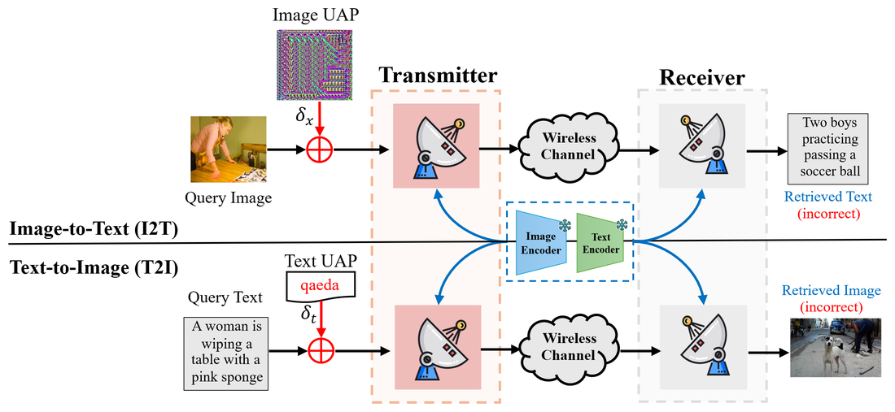
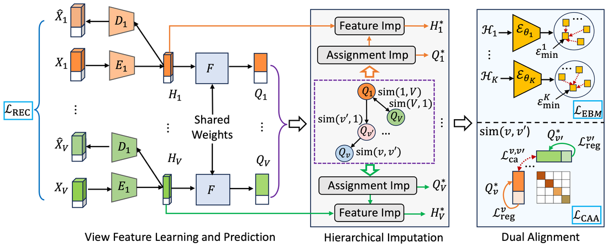
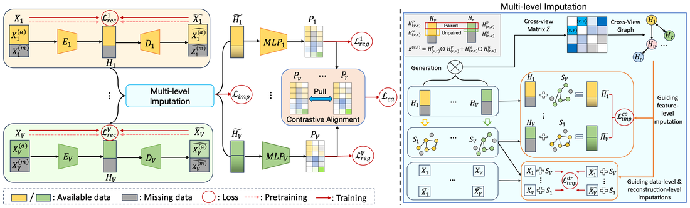

About
I am a Ph.D. candidate in Computer Science at Old Dominion University, advised by Prof. Lusi Li. My research centers on energy-based models for robust representation learning, with applications to multi-view clustering, semantic communication, and AI security — including the robustness of vision-language pre-trained models under adversarial perturbation.
I am broadly interested in building learning systems that stay reliable when data is incomplete, noisy, or adversarial.
Selected Publications

Not All, but the Right Ones: Energy-Guided Representation Learning for Incomplete Multi-View Clustering

SemCom-UAP: Universal Adversarial Perturbations Against Cross-Modal Retrieval in Semantic Communications

Deep Incomplete Multi-View Clustering via Hierarchical Imputation and AlignmentOral

Deep Incomplete Multi-view Clustering via Multi-level Imputation and Contrastive Alignment

Energy-based Deep Incomplete Multi-View Clustering

ECSC: Energy-Calibrated Semantic Communication

Incomplete Multi-view Clustering via Structure Exploration and Missing-View Inference
Education
Ph.D. in Computer Science (in progress)
Old Dominion University, Norfolk, VA · Advisor: Prof. Lusi Li
B.Eng. in Electrical Engineering
University of Detroit Mercy, Detroit, MI
B.S. in Electrical and Information Engineering
China University of Geosciences, Wuhan, China
Service
Journal Reviewer
IEEE Transactions on Neural Networks and Learning Systems · IEEE Transactions on Image Processing · IEEE Internet of Things Journal · IEEE Transactions on Consumer Electronics · IEEE Transactions on Multimedia · ACM Transactions on Knowledge Discovery from Data · Neural Networks (Elsevier) · Information Fusion (Elsevier) · Image and Vision Computing (Elsevier) · Expert Systems with Applications (Elsevier)
Conference Reviewer
AAAI Conference on Artificial Intelligence · ACM International Conference on Multimedia (ACM MM)